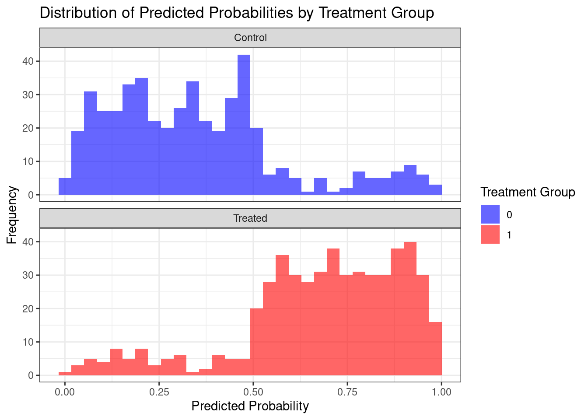
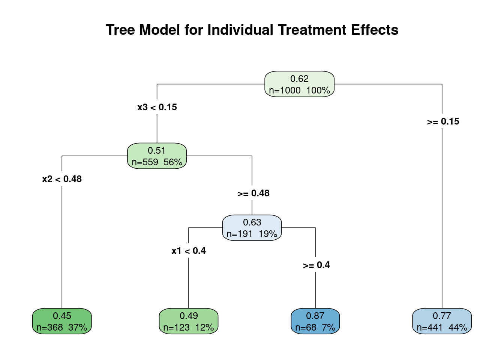
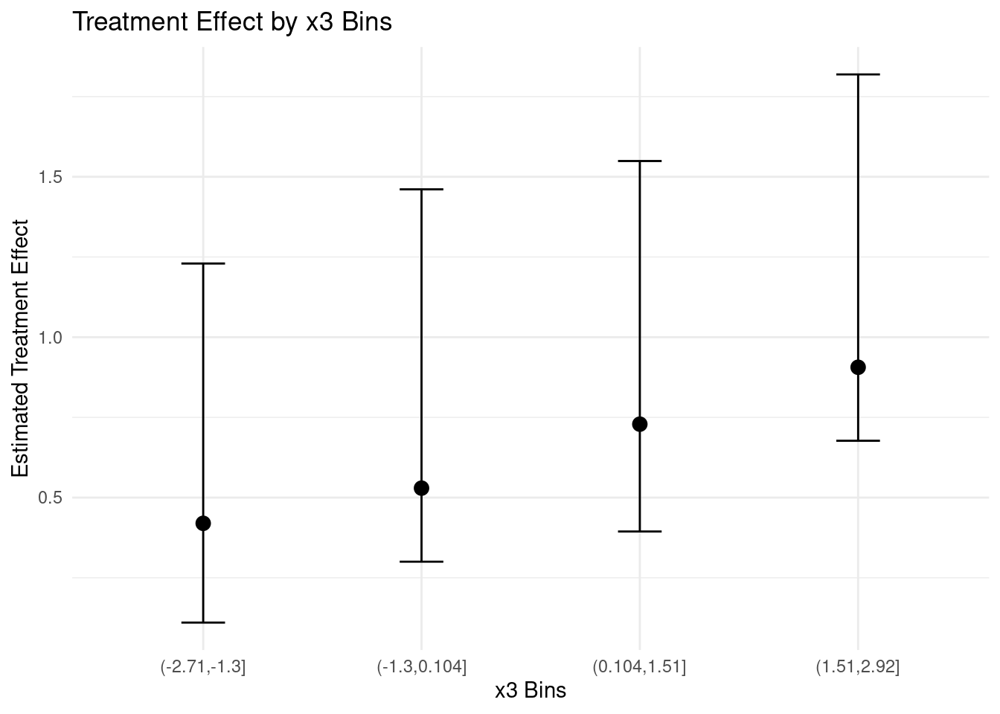

BART is a Bayesian nonparametric, machine learning, ensemble predictive modeling method introduced by Chipman, George, and McCulloch (2010). It can be expressed as:
where \(g(X; T_j, M_j)\) represents the \(j\)-th regression tree with structure \(T_j\) and leaf node parameters \(M_j\). The model uses \(m\) trees, typically set to a large number (e.g., 200), with each tree acting as a weak learner. BART employs a carefully designed prior that encourages each tree to play a small role in the overall fit, resulting in a flexible yet robust model.
Hill (2011) proposed using BART for causal inference, recognizing its unique advantages in this context. BART is particularly well-suited for causal inference due to its ability to:
Capture complex, nonlinear relationships without requiring explicit specification
Automatically model interactions between variables
Handle high-dimensional data effectively
Provide uncertainty quantification through its Bayesian framework
These features make BART especially valuable in observational studies with many covariates, where the true functional form of the relationship between variables is often unknown.
The key idea was to use BART to model the response surface:
\[
E[Y | X, Z] = f(X, Z)
\]
where \(Y\) is the outcome, \(X\) are the covariates, and \(Z\) is the treatment indicator. The causal effect can then be estimated as:
This formulation leverages BART’s inherent ability to automatically capture intricate interactions and non-linear relationships, making it a potent tool for causal inference, especially in high-dimensional scenarios.
The effectiveness of BART in causal inference has been further validated in recent competitions. Thal and Finucane (2023) report on the 2022 American Causal Inference Conference (ACIC) data challenge, where BART-based methods were among the top performers, particularly for estimating heterogeneous treatment effects. They found that BART’s regularizing priors were especially effective in controlling error for subgroup estimates, even in small subgroups, and its flexibility in modeling confounding relationships was crucial for improved causal inference in complex scenarios.
16.2 Example with a Single Covariate
To illustrate how BART can be used for estimating the impact of an intervention, Hill (2011) presents a simple example:
\[
\begin{aligned}
Z &\sim \mbox{Bernoulli}(0.5) \\
X | Z = 1 &\sim N(40,10^2) \\
X | Z = 0 &\sim N(20,10^2) \\
Y(0) | X &\sim N(72 + 3\sqrt{X},1) \\
Y(1) | X &\sim N(90 + exp(0.06X),1)
\end{aligned}
\]
library(ggplot2)library(dplyr)library(broom) # 1. Define True Outcome Functionsf_treated <-function(x) 90+exp(0.06* x)f_control <-function(x) 72+3*sqrt(x)# 2. Visualize True Outcome Functionsggplot(data.frame(x =6:62), aes(x = x)) +# Expanded x range for claritystat_function(fun = f_control, aes(color ="Truth - Control"), linewidth =1) +stat_function(fun = f_treated, aes(color ="Truth - Treatment"), linewidth =1) +scale_color_manual(values =c("red", "blue")) +labs(title ="True Outcome Functions", x ="X", y ="Y", color ="") +theme_bw() +theme(legend.position ="bottom")
We can generate a sample from that data generating process as follows:
set.seed(123)n_samples <-120simulated_data <-tibble(treatment_group =sample(c("Treatment", "Control"), size = n_samples, replace =TRUE),is_treated = treatment_group =="Treatment",X =if_else(is_treated, rnorm(n_samples, 40, 10), rnorm(n_samples, 20, 10)),Y1 =rnorm(n_samples, mean =f_treated(X), sd =1), Y0 =rnorm(n_samples, mean =f_control(X), sd =1), Y =if_else(is_treated, Y1, Y0),true_effect = Y1 - Y0)# 4. Visualize Simulated Data with True Functionsggplot(simulated_data, aes(x = X, y = Y, color = treatment_group)) +geom_point(size =2) +stat_function(fun = f_control, aes(color ="Truth - Control")) +stat_function(fun = f_treated, aes(color ="Truth - Treatment")) +scale_color_manual(values =c("Truth - Control"="red", "Truth - Treatment"="blue")) +labs(title ="Simulated Data with True Outcome Functions", x ="X", y ="Y", color ="") +theme_bw() +theme(legend.position ="bottom")
cat(glue::glue("The true Sample Average Treatment Effect is {round(mean(simulated_data$true_effect),2)}"))
The true Sample Average Treatment Effect is 10.84
Notice that in our sample, there is not very good overlap for low and high values of X. This means that we will have to do a lot of extrapolation when doing inference for those cases, which is a common challenge in causal inference. Now, suppose we just fit OLS to the model to try to estimate the average treatment effect:
linear_model <-lm(Y ~ X + is_treated, data = simulated_data)lm_fit <- broom::tidy(linear_model)lm_fit
cat(glue::glue("A linear model finds an Average Treatment Effect equal to {round(lm_fit$estimate[lm_fit$term=='is_treatedTRUE'],2)}"))
A linear model finds an Average Treatment Effect equal to 4.74
It’s important to note that the linear model is misspecified given the true nonlinear relationships, which contributes to its poor performance. Let’s add the findings from OLS to our plot:
prediction_data <-expand.grid(X =seq(min(simulated_data$X), max(simulated_data$X), length.out =1000),is_treated =c(TRUE, FALSE)) %>%mutate(treatment_group =if_else(is_treated, "Treatment", "Control"),linear_prediction =predict(linear_model, newdata = .) )# 6. Visualize Simulated Data, True Functions, and Linear Predictionsggplot() +geom_point(data = simulated_data, aes(x = X, y = Y, color = treatment_group), size =2) +stat_function(fun = f_control, aes(color ="Truth - Control")) +stat_function(fun = f_treated, aes(color ="Truth - Treatment")) +geom_line(data = prediction_data, aes(x = X, y = linear_prediction, color = treatment_group), linetype ="dashed") +scale_color_manual(values =c("Truth - Control"="red", "Truth - Treatment"="blue","Control"="red", "Treatment"="blue")) +labs(title ="Simulated Data, True Functions, and Linear Model Predictions",x ="X", y ="Y", color ="") +theme_bw() +theme(legend.position ="bottom")
After fitting, it is important to examine the traceplot of \(\sigma^2\) to assess if the model has converged. We can do this by running the following code:
trace_plot_data <-tibble(iteration =1:length(bart_model$sigma2_samples),sigma2_samples = bart_model$sigma2_samples )ggplot(aes(x = iteration, y = sigma2_samples), data = trace_plot_data) +geom_line(color ="blue", alpha =0.5) +labs(title ="Trace Plot for sigma^2",x ="Iteration",y ="sigma^2") +theme_bw()
When assessing convergence using the trace plot, look for the following:
Stationarity: The values should fluctuate around a constant mean level.
No trends: There should be no obvious upward or downward trends.
Quick mixing: The chain should move rapidly through the parameter space.
No stuck periods: There should be no long periods where the chain stays at the same value.
In this case, the trace plot suggests good convergence, as it exhibits these desirable properties.
Now we can plot the predictions from BART and compare them to the truth with the following code:
prediction_data <- prediction_data %>%mutate(bart_pred =rowMeans(bart_model$y_hat_test)) ggplot() +geom_point(data = simulated_data,aes(x = X, y = Y, color = treatment_group),size =2) +stat_function(fun = f_control, aes(color ="Truth - Control")) +stat_function(fun = f_treated, aes(color ="Truth - Treatment")) +scale_color_manual(values =c("Truth - Control"="red","Truth - Treatment"="blue","Control"="red","Treatment"="blue" ) ) +labs(title ="Simulated Data, True Functions, and BART Predictions",x ="X",y ="Y",color ="" ) +theme_bw() +theme(legend.position ="none") +geom_line(data = prediction_data,aes(x = X, y = bart_pred, color = treatment_group),linetype ="dashed") +scale_color_manual("", values =c("red", "blue","red", "blue", "red", "blue", "red", "blue")) +annotate(geom ="segment", x = xstart, y = yVals[1], xend = xstart+length, yend = yVals[1], color ="red") +annotate(geom ="text", x = text_left, y = yVals[1], label =c("truth - control"), hjust =0) +annotate(geom ="segment", x = xstart, y = yVals[2], xend = xstart+length, yend = yVals[2], color ="blue") +annotate(geom ="text", x = text_left, y = yVals[2], label =c("truth - treatment"), hjust =0) +geom_point(aes(x=xstart+length/2, y=yVals[3]), color =c("red")) +annotate(geom ="text", x = text_left, y = yVals[3], label =c("simulated data - control"), hjust =0) +geom_point(aes(x=xstart+length/2, y=yVals[4]), color =c("blue")) +annotate(geom ="text", x = text_left, y = yVals[4], label =c("simulated data - treatment"), hjust =0) +annotate(geom ="segment", x = xstart, y = yVals[5], xend = xstart+length, yend = yVals[5], color ="red", linetype ="dashed") +annotate(geom ="text", x = text_left, y = yVals[5], label =c("BART - control"), hjust =0) +annotate(geom ="segment", x = xstart, y = yVals[6], xend = xstart+length, yend = yVals[6], color ="blue", linetype ="dashed") +annotate(geom ="text", x = text_left, y = yVals[6], label =c("BART - treatment"), hjust =0)
Scale for colour is already present.
Adding another scale for colour, which will replace the existing scale.
Notice that BART does a very good job when we have overlap between the treatment and control groups, but when extrapolating for high values of X, BART cannot get the true control curve right because it has no data in that region. This highlights the importance of understanding how any method works.
Once we have fitted the BART model, we can calculate the sample average treatment effect by predicting the outcome for every individual in our sample under both treatment and control conditions. The difference between these predictions gives us the posterior distribution of the treatment effect for each individual. The sample average treatment effect is then the mean of this posterior distribution.
x0 <- simulated_data %>%mutate(is_treated=FALSE) %>%select(X,is_treated)x1 <- simulated_data %>%mutate(is_treated=TRUE) %>%select(X,is_treated)pred0 <-predict(bart_model, as.matrix(x0))pred1 <-predict(bart_model, as.matrix(x1))tau_draws <- pred1$y_hat - pred0$y_hat sate_draws <-colMeans(tau_draws)cat(glue::glue("BART finds an Average Treatment Effect equal to {round(mean(sate_draws),2)}"))
BART finds an Average Treatment Effect equal to 9.58
However, as we discussed before, point estimates are often not very useful for decision-making. For instance, we might make different decisions if the impact of the intervention is more than 9, between 0 and 9, or less than 0. Calculating probabilities for different effect sizes is more useful for decision-making than point estimates alone because it provides a more nuanced understanding of the potential outcomes and the uncertainty associated with our estimates. ::: {.content-visible when-format=“pdf”} We can easily calculate these probabilities using the draws from the posterior probability that we just calculated. ::: ::: {.content-visible when-format=“html”} We can easily calculate these probabilities using the posterior draws and visualize them:
Let’s extend our exploration of BART by incorporating multiple covariates and a propensity score. This scenario more closely resembles real-world causal inference problems, where we often deal with multiple confounding variables and complex relationships between covariates, treatment, and outcomes.
Consider a scenario with an outcome of interest, \(y\), a binary treatment indicator, \(z\), and three covariates, \(x_1\), \(x_2\), and \(x_3\), related as follows:
\[
y \sim N(\mu(x_1,x_2) + z \tau(x_2,x_3), \sigma)
\]
Here, \(\mu(x_1,x_2)\) represents the prognostic function (the expected outcome in the absence of treatment), and \(\tau(x_2,x_3)\) represents the treatment effect function. This setup allows for heterogeneous treatment effects that depend on \(x_2\) and \(x_3\).
library(dplyr)library(tidyr)set.seed(1982)n <-1000my_df <-tibble(x1 =rnorm(n), x2 =rnorm(n), x3 =rnorm(n) ) %>%mutate(mu =if_else(x1 > x2, -0.9, 1.1),pi =pnorm(mu),z =rbinom(n, 1, pi),tau =1/ (1+exp(-x3)) + x2 /10, y =rnorm(n, mean = mu + z * tau, sd =0.4) )glimpse(my_df)
In this data generating process, we’ve introduced confounding by making the treatment assignment (\(z\)) depend on the prognostic function (\(\mu\)). This creates a challenge for causal inference, as differences in outcomes between treated and control groups will be due to both the treatment effect and the confounding.
To gain insights into the relationship between \(x_3\) and the treatment effect, \(\tau\), let’s visualize it:
When using BART for causal inference, it’s important to include the propensity score as an additional covariate. The propensity score represents the probability of being in the treatment group given the covariates. Including it can improve the accuracy of treatment effect estimation, especially in scenarios with strong confounding.
Empirical research, such as that by Hahn, Murray, and Carvalho (2020), has shown that including the propensity score helps mitigate a phenomenon called “Regularization-Induced Confounding” (RIC). RIC can occur when flexible machine learning methods like BART are applied to causal inference problems with strong confounding. By including the propensity score, we give the model an additional tool to distinguish between the effects of confounding and the true treatment effect.
We can estimate the propensity score using a Bayesian generalized linear model (GLM):
# Fit Bayesian GLMps_model <- arm::bayesglm(z ~ x1 + x2 + x3,family =binomial(),data = my_df)# Calculate Predicted Probabilitiesmy_df <- my_df %>%mutate(ps =predict(ps_model, type ="response"))# Plot Histogram of Predicted Probabilitiesggplot(my_df, aes(x = ps, fill =factor(z))) +geom_histogram(alpha =0.6, position ="identity", bins =30) +facet_wrap(~ z, ncol =1, labeller =labeller(z =c("0"="Control", "1"="Treated"))) +labs(title ="Distribution of Predicted Probabilities by Treatment Group",x ="Predicted Probability", y ="Frequency",fill ="Treatment Group") +theme_bw() +scale_fill_manual(values =c("0"="blue", "1"="red"))

This plot reveals the degree of overlap in propensity scores between the treated and control groups. Good overlap is crucial for reliable causal inference. Areas where there’s little overlap between the treated and control groups may lead to less reliable estimates of treatment effects.
Now we can fit our BART model, including the estimated propensity score alongside our original covariates:
After fitting, let’s examine the trace plot of \(\sigma^2\) to assess convergence:
# Create the Data for Plottingdf_plot <-tibble(iteration =seq_along(bart_model$sigma2_samples), # Sequence of iteration numberssigma = bart_model$sigma2_samples )# Create the Traceplotggplot(data = df_plot, aes(x = iteration, y = sigma)) +geom_line(color ="blue", alpha =0.7) +labs(title ="Traceplot for BART Model Sigma",x ="Iteration",y =expression(sigma)) +theme_bw() +geom_hline(yintercept =mean(df_plot$sigma), linetype ="dashed", color ="red")
This trace plot shows the values of \(\sigma\) across MCMC iterations. We’re looking for a relatively stationary pattern without any clear trends, which would indicate good convergence. The red dashed line represents the mean value of \(\sigma\).
We can also assess the effective sample size (ESS) to gauge the efficiency of the sampling process:
library(coda)# Calculate Effective Sample Size (ESS)ess_sigma <-effectiveSize(df_plot$sigma) # Display the Result (with formatting)cat("Effective Sample Size (ESS) for sigma:", format(ess_sigma, big.mark =","), "\n")
Effective Sample Size (ESS) for sigma: 32.1997
The ESS tells us how many independent samples our MCMC chain is equivalent to. A higher ESS indicates more efficient sampling and more reliable posterior estimates.
Now, let’s calculate the estimated average treatment effect using BART:
BART finds an Average Treatment Effect equal to 0.62
cat(glue::glue("The truth Average Treatment Effect is equal to {round(mean(my_df$tau),2)}"))
The truth Average Treatment Effect is equal to 0.51
Tip
A key advantage of BART is its ability to estimate treatment effects at the individual level. While these individual estimates can be noisy, they can be useful for exploring potential treatment effect heterogeneity. One way to do this is by using a classification and regression tree (CART) model on the estimated individual treatment effects:
library(rpart)library(rpart.plot)my_df <- my_df %>%mutate(tau_hat =rowMeans(tau_draws)) # point estimate of the individual's treatment effect# Fit the Tree Model (Using Cross-Validation)tree_model <-rpart( tau_hat ~ x1 + x2 + x3, data = my_df, method ="anova", control =rpart.control(cp =0.05, xval =10) # Cross-validation with 10 folds)# Find Optimal Complexity Parameter (CP)optimal_cp <- tree_model$cptable[which.min(tree_model$cptable[, "xerror"]), "CP"]# Prune the Tree for Better Generalizationpruned_tree <-prune(tree_model, cp = optimal_cp)# Plot the Pruned Treerpart.plot(pruned_tree, type =4, extra =101, fallen.leaves =TRUE,main ="Tree Model for Individual Treatment Effects", cex =0.8, box.palette ="GnBu")

# Print the Pruned Tree Summaryprintcp(pruned_tree) # See the results of pruning
In our analysis, the CART model successfully identified \(x_3\) as the primary driver of treatment effect heterogeneity, aligning with the way we generated our data. However, it’s crucial to exercise caution when interpreting these results:
CART models do not inherently account for uncertainty. The splits in the tree are based on point estimates and don’t reflect the uncertainty in our treatment effect estimates.
The tree structure can be sensitive to small changes in the data. Different samples might yield different trees, even if the underlying relationships are the same.
While CART pinpointed \(x_3\) as the key modifier, it also suggests that \(x_1\) is a modifier, which we know is not correct in our simulated data. This illustrates how CART can sometimes identify spurious relationships.
To gain a more nuanced understanding of treatment effect heterogeneity, we should leverage the full posterior distribution of treatment effects obtained from BART. This allows us to quantify our uncertainty about heterogeneous effects and avoid overinterpreting potentially spurious findings from methods like CART.
For example, we could examine how the posterior distribution of treatment effects varies across different levels of \(x_3\):
# Create bins for x3my_df <- my_df %>%mutate(x3_bin =cut(x3, breaks =4))# Calculate mean and credible intervals for each bintau_summary <- my_df %>%group_by(x3_bin) %>%summarise(mean_tau =mean(tau_hat),lower_ci =quantile(tau_hat, 0.025),upper_ci =quantile(tau_hat, 0.975) )# Plotggplot(tau_summary, aes(x = x3_bin, y = mean_tau)) +geom_point(size =3) +geom_errorbar(aes(ymin = lower_ci, ymax = upper_ci), width =0.2) +labs(title ="Treatment Effect by x3 Bins",x ="x3 Bins",y ="Estimated Treatment Effect") +theme_minimal()

This plot gives us a more robust view of how the treatment effect varies with \(x_3\), including our uncertainty about these effects. We can see that the treatment effect generally increases with \(x_3\), but there’s considerable uncertainty
In conclusion, while BART provides powerful tools for estimating heterogeneous treatment effects, it’s crucial to combine these estimates with careful consideration of uncertainty and potential confounding. By doing so, we can gain valuable insights into how treatment effects vary across different subgroups, while avoiding overconfident or spurious conclusions.
Learn more
Hill (2011) Bayesian nonparametric modeling for causal inference.
16.4 Accelerated BART (XBART)
While BART has proven to be a powerful tool for causal inference, its computational demands can be significant, especially with large datasets. To address this, He, Yalov, and Hahn (2019) introduced Accelerated BART (XBART), a method that maintains the flexibility and effectiveness of BART while substantially reducing computation time.
XBART uses a stochastic tree-growing algorithm inspired by Bayesian updating, blending regularization strategies from Bayesian modeling with computationally efficient techniques from recursive partitioning. The key difference is that XBART regrows each tree from scratch at each iteration, rather than making small modifications to existing trees as in standard BART. The XBART algorithm proceeds as follows:
At each node, calculate the probability of splitting at each possible cutpoint based on the marginal likelihood.
Sample a split (or no split) according to these probabilities.
If a split is chosen, recursively apply steps 1-2 to the resulting child nodes.
If no split is chosen or stopping conditions are met, sample the leaf parameter from its posterior distribution.
This approach allows XBART to efficiently explore the space of possible tree structures, leading to faster convergence and reduced computation time compared to standard BART.
Chipman, Hugh A., Edward I. George, and Robert E. McCulloch. 2010. “BART: Bayesian additive regression trees.”The Annals of Applied Statistics 4 (1): 266–98. https://doi.org/10.1214/09-AOAS285.
Hahn, P Richard, Jared S Murray, and Carlos M Carvalho. 2020. “Bayesian Regression Tree Models for Causal Inference: Regularization, Confounding, and Heterogeneous Effects (with Discussion).”Bayesian Analysis 15 (3): 965–1056. https://doi.org/10.1214/19-BA1195.
He, Jingyu, Saar Yalov, and P Richard Hahn. 2019. “XBART: Accelerated Bayesian Additive Regression Trees.” In The 22nd International Conference on Artificial Intelligence and Statistics, 1130–38. PMLR. https://proceedings.mlr.press/v89/he19a.html.
Hill, Jennifer L. 2011. “Bayesian Nonparametric Modeling for Causal Inference.”Journal of Computational and Graphical Statistics 20 (1): 217–40. https://doi.org/10.1198/jcgs.2010.08162.
Thal, Dan RC, and Mariel M Finucane. 2023. “Causal Methods Madness: Lessons Learned from the 2022 ACIC Competition to Estimate Health Policy Impacts.”Observational Studies 9 (3): 3–27. https://doi.org/110.1353/obs.2023.0023.
Source Code
---title: "Bayesian Additive Regression Trees (BART)"share: permalink: "https://book.martinez.fyi/bart.html" description: "Business Data Science: What Does it Mean to Be Data-Driven?" linkedin: true email: true mastodon: true---## BART: Bayesian Additive Regression TreesBART is a Bayesian nonparametric, machine learning, ensemble predictive modelingmethod introduced by @chipman2010bart. It can be expressed as:$$Y = \sum_{j=1}^m g(X; T_j, M_j) + \epsilon, \quad \epsilon \sim N(0, \sigma^2)$$where $g(X; T_j, M_j)$ represents the $j$-th regression tree with structure$T_j$ and leaf node parameters $M_j$. The model uses $m$ trees, typically set toa large number (e.g., 200), with each tree acting as a weak learner. BARTemploys a carefully designed prior that encourages each tree to play a smallrole in the overall fit, resulting in a flexible yet robust model.@hill2011bayesian proposed using BART for causal inference, recognizing itsunique advantages in this context. BART is particularly well-suited for causalinference due to its ability to:1. Capture complex, nonlinear relationships without requiring explicit specification2. Automatically model interactions between variables3. Handle high-dimensional data effectively4. Provide uncertainty quantification through its Bayesian frameworkThese features make BART especially valuable in observational studies with manycovariates, where the true functional form of the relationship between variablesis often unknown.The key idea was to use BART to model the response surface:$$E[Y | X, Z] = f(X, Z)$$where $Y$ is the outcome, $X$ are the covariates, and $Z$ is the treatmentindicator. The causal effect can then be estimated as:$$\begin{aligned}\tau(x) & = E[Y | X=x, Z=1] - E[Y | X=x, Z=0]\\ & = f(x, 1) - f(x, 0)\end{aligned}$$This formulation leverages BART's inherent ability to automatically captureintricate interactions and non-linear relationships, making it a potent tool forcausal inference, especially in high-dimensional scenarios.The effectiveness of BART in causal inference has been further validated inrecent competitions. @thal2023causal report on the 2022 American CausalInference Conference (ACIC) data challenge, where BART-based methods were amongthe top performers, particularly for estimating heterogeneous treatment effects.They found that BART's regularizing priors were especially effective incontrolling error for subgroup estimates, even in small subgroups, and itsflexibility in modeling confounding relationships was crucial for improvedcausal inference in complex scenarios.## Example with a Single CovariateTo illustrate how BART can be used for estimating the impact of an intervention,@hill2011bayesian presents a simple example:$$\begin{aligned}Z &\sim \mbox{Bernoulli}(0.5) \\X | Z = 1 &\sim N(40,10^2) \\X | Z = 0 &\sim N(20,10^2) \\Y(0) | X &\sim N(72 + 3\sqrt{X},1) \\Y(1) | X &\sim N(90 + exp(0.06X),1) \end{aligned}$$```{r truth, message=FALSE, warning=FALSE}library(ggplot2)library(dplyr)library(broom) # 1. Define True Outcome Functionsf_treated <- function(x) 90 + exp(0.06 * x)f_control <- function(x) 72 + 3 * sqrt(x)# 2. Visualize True Outcome Functionsggplot(data.frame(x = 6:62), aes(x = x)) + # Expanded x range for clarity stat_function(fun = f_control, aes(color = "Truth - Control"), linewidth = 1) + stat_function(fun = f_treated, aes(color = "Truth - Treatment"), linewidth = 1) + scale_color_manual(values = c("red", "blue")) + labs(title = "True Outcome Functions", x = "X", y = "Y", color = "") + theme_bw() + theme(legend.position = "bottom") ```We can generate a sample from that data generating process as follows:```{r sample, warning=FALSE, message=FALSE}set.seed(123)n_samples <- 120simulated_data <- tibble( treatment_group = sample(c("Treatment", "Control"), size = n_samples, replace = TRUE), is_treated = treatment_group == "Treatment", X = if_else(is_treated, rnorm(n_samples, 40, 10), rnorm(n_samples, 20, 10)), Y1 = rnorm(n_samples, mean = f_treated(X), sd = 1), Y0 = rnorm(n_samples, mean = f_control(X), sd = 1), Y = if_else(is_treated, Y1, Y0), true_effect = Y1 - Y0)# 4. Visualize Simulated Data with True Functionsggplot(simulated_data, aes(x = X, y = Y, color = treatment_group)) + geom_point(size = 2) + stat_function(fun = f_control, aes(color = "Truth - Control")) + stat_function(fun = f_treated, aes(color = "Truth - Treatment")) + scale_color_manual(values = c("Truth - Control" = "red", "Truth - Treatment" = "blue")) + labs(title = "Simulated Data with True Outcome Functions", x = "X", y = "Y", color = "") + theme_bw() + theme(legend.position = "bottom") cat(glue::glue("The true Sample Average Treatment Effect is {round(mean(simulated_data$true_effect),2)}"))```Notice that in our sample, there is not very good overlap for low and highvalues of X. This means that we will have to do a lot of extrapolation whendoing inference for those cases, which is a common challenge in causalinference. Now, suppose we just fit OLS to the model to try to estimate theaverage treatment effect:```{r ols}linear_model <- lm(Y ~ X + is_treated, data = simulated_data)lm_fit <- broom::tidy(linear_model)lm_fitcat(glue::glue("A linear model finds an Average Treatment Effect equal to {round(lm_fit$estimate[lm_fit$term=='is_treatedTRUE'],2)}"))```It's important to note that the linear model is misspecified given the truenonlinear relationships, which contributes to its poor performance. Let's addthe findings from OLS to our plot:```{r ols_plot, warning=FALSE}prediction_data <- expand.grid( X = seq(min(simulated_data$X), max(simulated_data$X), length.out = 1000), is_treated = c(TRUE, FALSE)) %>% mutate( treatment_group = if_else(is_treated, "Treatment", "Control"), linear_prediction = predict(linear_model, newdata = .) )# 6. Visualize Simulated Data, True Functions, and Linear Predictionsggplot() + geom_point(data = simulated_data, aes(x = X, y = Y, color = treatment_group), size = 2) + stat_function(fun = f_control, aes(color = "Truth - Control")) + stat_function(fun = f_treated, aes(color = "Truth - Treatment")) + geom_line(data = prediction_data, aes(x = X, y = linear_prediction, color = treatment_group), linetype = "dashed") + scale_color_manual(values = c("Truth - Control" = "red", "Truth - Treatment" = "blue", "Control" = "red", "Treatment" = "blue")) + labs(title = "Simulated Data, True Functions, and Linear Model Predictions", x = "X", y = "Y", color = "") + theme_bw() + theme(legend.position = "bottom") ```To fit BART we can use the [{stochtree}](https://stochastictree.github.io/stochtree-r/) package.```{r fit_bart, warning=FALSE, message=FALSE}xstart <- 20-15length <- 4text_left <- 26-15yVals <- seq(110,130,by=4)X_train <- simulated_data %>% select(X, is_treated) %>% as.matrix()X_test <- prediction_data %>% select(X, is_treated) %>% as.matrix()bart_model <- stochtree::bart(X_train = X_train, X_test = X_test, y_train = simulated_data$Y, num_burnin = 1000, num_mcmc = 2000)```After fitting, it is important to examine the traceplot of $\sigma^2$ to assessif the model has converged. We can do this by running the following code:```{r traceplot}trace_plot_data <- tibble( iteration = 1:length(bart_model$sigma2_samples), sigma2_samples = bart_model$sigma2_samples )ggplot(aes(x = iteration, y = sigma2_samples), data = trace_plot_data) + geom_line(color = "blue", alpha = 0.5) + labs(title = "Trace Plot for sigma^2", x = "Iteration", y = "sigma^2") + theme_bw()```When assessing convergence using the trace plot, look for the following:1. Stationarity: The values should fluctuate around a constant mean level.2. No trends: There should be no obvious upward or downward trends.3. Quick mixing: The chain should move rapidly through the parameter space.4. No stuck periods: There should be no long periods where the chain stays at the same value.In this case, the trace plot suggests good convergence, as it exhibits thesedesirable properties.Now we can plot the predictions from BART and compare them to the truth with thefollowing code:```{r bart_plot}prediction_data <- prediction_data %>% mutate(bart_pred = rowMeans(bart_model$y_hat_test)) ggplot() + geom_point(data = simulated_data, aes(x = X, y = Y, color = treatment_group), size = 2) + stat_function(fun = f_control, aes(color = "Truth - Control")) + stat_function(fun = f_treated, aes(color = "Truth - Treatment")) + scale_color_manual( values = c( "Truth - Control" = "red", "Truth - Treatment" = "blue", "Control" = "red", "Treatment" = "blue" ) ) + labs( title = "Simulated Data, True Functions, and BART Predictions", x = "X", y = "Y", color = "" ) + theme_bw() + theme(legend.position = "none") + geom_line(data = prediction_data, aes(x = X, y = bart_pred, color = treatment_group), linetype = "dashed") + scale_color_manual("", values = c("red", "blue","red", "blue", "red", "blue", "red", "blue")) + annotate(geom = "segment", x = xstart, y = yVals[1], xend = xstart+length, yend = yVals[1], color = "red") + annotate(geom = "text", x = text_left, y = yVals[1], label = c("truth - control"), hjust = 0) + annotate(geom = "segment", x = xstart, y = yVals[2], xend = xstart+length, yend = yVals[2], color = "blue") + annotate(geom = "text", x = text_left, y = yVals[2], label = c("truth - treatment"), hjust = 0) + geom_point(aes(x=xstart+length/2, y=yVals[3]), color = c("red")) + annotate(geom = "text", x = text_left, y = yVals[3], label = c("simulated data - control"), hjust = 0) + geom_point(aes(x=xstart+length/2, y=yVals[4]), color = c("blue")) + annotate(geom = "text", x = text_left, y = yVals[4], label = c("simulated data - treatment"), hjust = 0) + annotate(geom = "segment", x = xstart, y = yVals[5], xend = xstart+length, yend = yVals[5], color = "red", linetype = "dashed") + annotate(geom = "text", x = text_left, y = yVals[5], label = c("BART - control"), hjust = 0) + annotate(geom = "segment", x = xstart, y = yVals[6], xend = xstart+length, yend = yVals[6], color = "blue", linetype = "dashed") + annotate(geom = "text", x = text_left, y = yVals[6], label = c("BART - treatment"), hjust = 0) ```Notice that BART does a very good job when we have overlap between the treatmentand control groups, but when extrapolating for high values of X, BART cannot getthe true control curve right because it has no data in that region. Thishighlights the importance of understanding how any method works.Once we have fitted the BART model, we can calculate the sample averagetreatment effect by predicting the outcome for every individual in our sampleunder both treatment and control conditions. The difference between thesepredictions gives us the posterior distribution of the treatment effect for eachindividual. The sample average treatment effect is then the mean of thisposterior distribution.```{r bart_sate}x0 <- simulated_data %>% mutate(is_treated=FALSE) %>% select(X,is_treated)x1 <- simulated_data %>% mutate(is_treated=TRUE) %>% select(X,is_treated)pred0 <- predict(bart_model, as.matrix(x0))pred1 <- predict(bart_model, as.matrix(x1))tau_draws <- pred1$y_hat - pred0$y_hat sate_draws <- colMeans(tau_draws)cat(glue::glue("BART finds an Average Treatment Effect equal to {round(mean(sate_draws),2)}"))```However, as we discussed before, point estimates are often not very useful fordecision-making. For instance, we might make different decisions if the impactof the intervention is more than 9, between 0 and 9, or less than 0. Calculatingprobabilities for different effect sizes is more useful for decision-making thanpoint estimates alone because it provides a more nuanced understanding of thepotential outcomes and the uncertainty associated with our estimates.::: {.content-visible when-format="pdf"}We can easily calculate these probabilities using the draws from the posteriorprobability that we just calculated.::: ::: {.content-visible when-format="html"}We can easily calculate these probabilities using the posterior draws and visualizethem:```{r bart_viz}#| eval: !expr knitr::is_html_output()vizdraws::vizdraws( posterior = sate_draws, breaks = c(0, 9), break_names = c("Discontinue", "Continue", " Expand"))```:::## More Covariates and Propensity ScoreLet's extend our exploration of BART by incorporating multiple covariates and apropensity score. This scenario more closely resembles real-world causalinference problems, where we often deal with multiple confounding variables andcomplex relationships between covariates, treatment, and outcomes.Consider a scenario with an outcome of interest, $y$, a binary treatmentindicator, $z$, and three covariates, $x_1$, $x_2$, and $x_3$, related asfollows: $$y \sim N(\mu(x_1,x_2) + z \tau(x_2,x_3), \sigma)$$Here, $\mu(x_1,x_2)$ represents the prognostic function (the expected outcome inthe absence of treatment), and $\tau(x_2,x_3)$ represents the treatment effectfunction. This setup allows for heterogeneous treatment effects that depend on$x_2$ and $x_3$.```{r fake_data2}library(dplyr)library(tidyr)set.seed(1982)n <- 1000 my_df <- tibble( x1 = rnorm(n), x2 = rnorm(n), x3 = rnorm(n) ) %>% mutate( mu = if_else(x1 > x2, -0.9, 1.1), pi = pnorm(mu), z = rbinom(n, 1, pi), tau = 1 / (1 + exp(-x3)) + x2 / 10, y = rnorm(n, mean = mu + z * tau, sd = 0.4) )glimpse(my_df)```In this data generating process, we've introduced confounding by making thetreatment assignment ($z$) depend on the prognostic function ($\mu$). Thiscreates a challenge for causal inference, as differences in outcomes betweentreated and control groups will be due to both the treatment effect and theconfounding.To gain insights into the relationship between $x_3$ and the treatment effect,$\tau$, let's visualize it:```{r plot2, message=FALSE, warning=FALSE}ggplot(data = my_df, aes(x = x3, y = tau)) + geom_point(size = 2.5, alpha = 0.7) + geom_smooth( method = "loess", se = FALSE, color = "blue", linewidth = 1 ) + xlab(expression(x[3])) + ylab(expression(tau)) + ggtitle(expression( paste("Relationship between ", x[3], " and Treatment Effect (", tau, ")") )) + theme_minimal() + theme( axis.title = element_text(size = 14, face = "bold"), plot.title = element_text(size = 16, hjust = 0.5) )```::: {.callout-note}## TipWhen using BART for causal inference, it's important to include the propensityscore as an additional covariate. The propensity score represents theprobability of being in the treatment group given the covariates. Including itcan improve the accuracy of treatment effect estimation, especially in scenarioswith strong confounding.Empirical research, such as that by @hahn2020bayesian, has shown that includingthe propensity score helps mitigate a phenomenon called "Regularization-InducedConfounding" (RIC). RIC can occur when flexible machine learning methods likeBART are applied to causal inference problems with strong confounding. Byincluding the propensity score, we give the model an additional tool todistinguish between the effects of confounding and the true treatment effect.::: We can estimate the propensity score using a Bayesian generalized linear model(GLM):```{r}# Fit Bayesian GLMps_model <- arm::bayesglm(z ~ x1 + x2 + x3,family =binomial(),data = my_df)# Calculate Predicted Probabilitiesmy_df <- my_df %>%mutate(ps =predict(ps_model, type ="response"))# Plot Histogram of Predicted Probabilitiesggplot(my_df, aes(x = ps, fill =factor(z))) +geom_histogram(alpha =0.6, position ="identity", bins =30) +facet_wrap(~ z, ncol =1, labeller =labeller(z =c("0"="Control", "1"="Treated"))) +labs(title ="Distribution of Predicted Probabilities by Treatment Group",x ="Predicted Probability", y ="Frequency",fill ="Treatment Group") +theme_bw() +scale_fill_manual(values =c("0"="blue", "1"="red"))```This plot reveals the degree of overlap in propensity scores between the treatedand control groups. Good overlap is crucial for reliable causal inference. Areaswhere there's little overlap between the treated and control groups may lead toless reliable estimates of treatment effects.Now we can fit our BART model, including the estimated propensity scorealongside our original covariates:```{r fit_bart2}X_train <- my_df %>% select(x1, x2, x3, ps, z) %>% as.matrix()bart_model <- stochtree::bart(X_train = X_train, y_train = my_df$y, num_burnin = 1000, num_mcmc = 2000)```After fitting, let's examine the trace plot of $\sigma^2$ to assess convergence:```{r}# Create the Data for Plottingdf_plot <-tibble(iteration =seq_along(bart_model$sigma2_samples), # Sequence of iteration numberssigma = bart_model$sigma2_samples )# Create the Traceplotggplot(data = df_plot, aes(x = iteration, y = sigma)) +geom_line(color ="blue", alpha =0.7) +labs(title ="Traceplot for BART Model Sigma",x ="Iteration",y =expression(sigma)) +theme_bw() +geom_hline(yintercept =mean(df_plot$sigma), linetype ="dashed", color ="red") ```This trace plot shows the values of $\sigma$ across MCMC iterations. We'relooking for a relatively stationary pattern without any clear trends, whichwould indicate good convergence. The red dashed line represents the mean valueof $\sigma$.We can also assess the effective sample size (ESS) to gauge the efficiency ofthe sampling process:```{r}library(coda)# Calculate Effective Sample Size (ESS)ess_sigma <-effectiveSize(df_plot$sigma) # Display the Result (with formatting)cat("Effective Sample Size (ESS) for sigma:", format(ess_sigma, big.mark =","), "\n") ```The ESS tells us how many independent samples our MCMC chain is equivalent to. Ahigher ESS indicates more efficient sampling and more reliable posteriorestimates.Now, let's calculate the estimated average treatment effect using BART:```{r}x0 <- my_df %>%select(x1, x2, x3, ps, z) %>%mutate(z=0) %>%as.matrix()x1 <- my_df %>%select(x1, x2, x3, ps, z) %>%mutate(z=1) %>%as.matrix()pred0 <-predict(bart_model, as.matrix(x0))pred1 <-predict(bart_model, as.matrix(x1))tau_draws <- pred1$y_hat - pred0$y_hat sate_draws <-colMeans(tau_draws)cat(glue::glue("BART finds an Average Treatment Effect equal to {round(mean(sate_draws),2)}"))cat(glue::glue("The truth Average Treatment Effect is equal to {round(mean(my_df$tau),2)}"))```::: {.callout-note}## TipA key advantage of BART is its ability to estimate treatment effects at theindividual level. While these individual estimates can be noisy, they can beuseful for exploring potential treatment effect heterogeneity. One way to dothis is by using a classification and regression tree (CART) model on theestimated individual treatment effects:::: ```{r}library(rpart)library(rpart.plot)my_df <- my_df %>%mutate(tau_hat =rowMeans(tau_draws)) # point estimate of the individual's treatment effect# Fit the Tree Model (Using Cross-Validation)tree_model <-rpart( tau_hat ~ x1 + x2 + x3, data = my_df, method ="anova", control =rpart.control(cp =0.05, xval =10) # Cross-validation with 10 folds)# Find Optimal Complexity Parameter (CP)optimal_cp <- tree_model$cptable[which.min(tree_model$cptable[, "xerror"]), "CP"]# Prune the Tree for Better Generalizationpruned_tree <-prune(tree_model, cp = optimal_cp)# Plot the Pruned Treerpart.plot(pruned_tree, type =4, extra =101, fallen.leaves =TRUE,main ="Tree Model for Individual Treatment Effects", cex =0.8, box.palette ="GnBu") # Print the Pruned Tree Summaryprintcp(pruned_tree) # See the results of pruning```In our analysis, the CART model successfully identified $x_3$ as the primarydriver of treatment effect heterogeneity, aligning with the way we generated ourdata. However, it's crucial to exercise caution when interpreting these results:1. CART models do not inherently account for uncertainty. The splits in the tree are based on point estimates and don't reflect the uncertainty in our treatment effect estimates.2. The tree structure can be sensitive to small changes in the data. Different samples might yield different trees, even if the underlying relationships are the same.3. While CART pinpointed $x_3$ as the key modifier, it also suggests that $x_1$ is a modifier, which we know is not correct in our simulated data. This illustrates how CART can sometimes identify spurious relationships.To gain a more nuanced understanding of treatment effect heterogeneity, weshould leverage the full posterior distribution of treatment effects obtainedfrom BART. This allows us to quantify our uncertainty about heterogeneouseffects and avoid overinterpreting potentially spurious findings from methodslike CART.For example, we could examine how the posterior distribution of treatmenteffects varies across different levels of $x_3$:```{r byx3}# Create bins for x3my_df <- my_df %>% mutate(x3_bin = cut(x3, breaks = 4))# Calculate mean and credible intervals for each bintau_summary <- my_df %>% group_by(x3_bin) %>% summarise( mean_tau = mean(tau_hat), lower_ci = quantile(tau_hat, 0.025), upper_ci = quantile(tau_hat, 0.975) )# Plotggplot(tau_summary, aes(x = x3_bin, y = mean_tau)) + geom_point(size = 3) + geom_errorbar(aes(ymin = lower_ci, ymax = upper_ci), width = 0.2) + labs(title = "Treatment Effect by x3 Bins", x = "x3 Bins", y = "Estimated Treatment Effect") + theme_minimal()```This plot gives us a more robust view of how the treatment effect varies with$x_3$, including our uncertainty about these effects. We can see that thetreatment effect generally increases with $x_3$, but there's considerableuncertaintyIn conclusion, while BART provides powerful tools for estimating heterogeneoustreatment effects, it's crucial to combine these estimates with carefulconsideration of uncertainty and potential confounding. By doing so, we can gainvaluable insights into how treatment effects vary across different subgroups,while avoiding overconfident or spurious conclusions.::: {.callout-tip}## Learn more@hill2011bayesian Bayesian nonparametric modeling for causal inference.::: ## Accelerated BART (XBART)While BART has proven to be a powerful tool for causal inference, itscomputational demands can be significant, especially with large datasets. Toaddress this, @he2019xbart introduced Accelerated BART (XBART), a method thatmaintains the flexibility and effectiveness of BART while substantially reducingcomputation time.XBART uses a stochastic tree-growing algorithm inspired by Bayesian updating,blending regularization strategies from Bayesian modeling with computationallyefficient techniques from recursive partitioning. The key difference is thatXBART regrows each tree from scratch at each iteration, rather than making smallmodifications to existing trees as in standard BART. The XBART algorithmproceeds as follows:1. At each node, calculate the probability of splitting at each possible cutpoint based on the marginal likelihood.2. Sample a split (or no split) according to these probabilities.3. If a split is chosen, recursively apply steps 1-2 to the resulting child nodes.4. If no split is chosen or stopping conditions are met, sample the leaf parameter from its posterior distribution.This approach allows XBART to efficiently explore the space of possible treestructures, leading to faster convergence and reduced computation time comparedto standard BART.